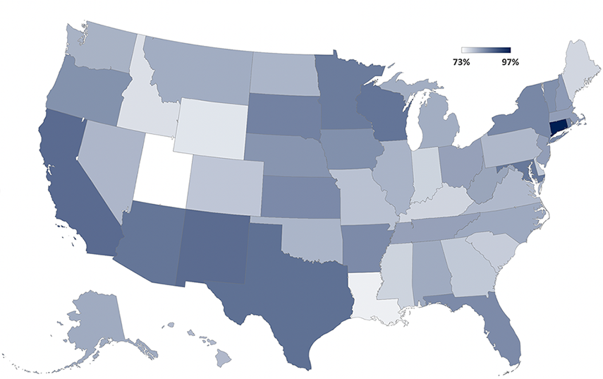

How the U.S. gender wage gap compares to other countries
International gender wage gaps as a percentage, 2020

Women's earnings as a percentage of men's, heatmap by state
Median usual weekly earnings of full-time wage and salary workers, 2020 averages
Gender wage gaps persist among both the top highest and lowest paid occupations in the United States
Median weekly earnings of full-time wage and salary workers, 2019 averages
Educational attainment does little to prevent gender wage gaps for educated women
Median weekly earnings of full-time wage and salary workers, 25 years and older, 2019 averages

Sources: OECD, Department of Labor, Bureau of Labor Statistics, U.S. Census
Notes: The gender wage gap is defined as the difference between median earnings of men and women relative to median earnings of men. Further analysis of intersectional identities with gender (e.g. race, marital status, age) would highlight this impact on wages.
Chart 1: Though this series on the gender wage gap will focus primarily on the United States, you can see that this issue is not unique to the U.S. workforce. Among the top contributers to this inequality are some of the world's most economically developed countries in the OECD.
Chart 2: Consider how this heatmap would look if gender wage equality existed across the United States. With a rich, dark blue shade blanketing the country, every state would look more like Connecticut.
Chart 3: Perhaps you observed the more equal distribution of wages between men and women in the lowest paying occupations. Unfortunately, this is not a sign of equitable compensation. Notice that in the top five highest paying jobs, the gender wage gap is far more acute. This is reflective of the "glass ceiling" that you may have referred to more colloquially.
Chart 4: The graph above may seem counterintuitive — the disparity between wages among men and women with more advanced degrees actually widens that gap. we climb the academic ladder to more advanced and professional degrees. This is problematic in a growingly credentialed labor workforce across genders. What might this imply about the value placed in a degree held by a man versus woman?